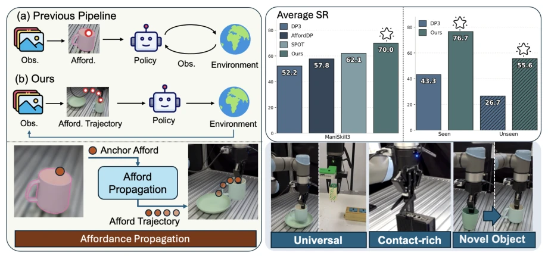
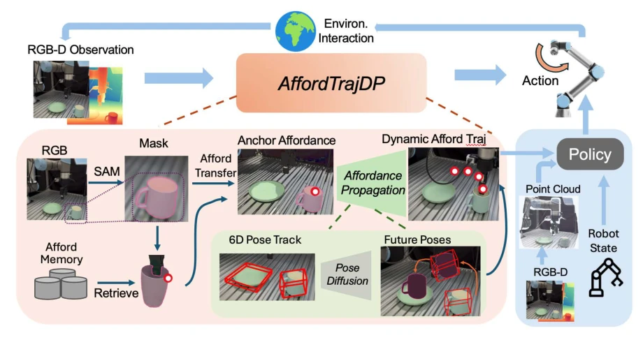
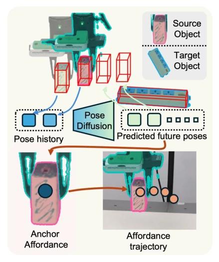
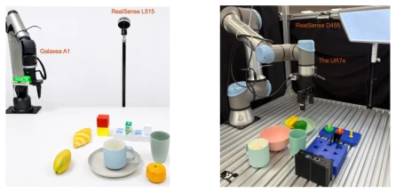
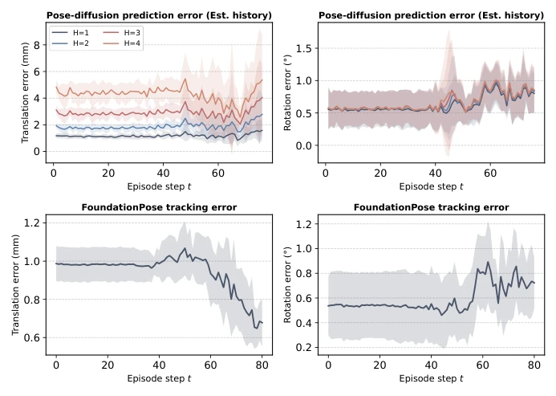

AffordTrajDP equips robots with a "dynamic navigator", no longer rigidly adhering to a single contact point, but allowing the contact point to "track" with the object. This approach proves effective in precision insertion tasks, boosting success rates from over 50% to 70%, serving as a lesson for older methods (such as AffordDP) that only stubbornly adhere to static priors. However, the author's claim that "errors do not accumulate" was admitted in the Discussion to be merely correlational evidence, lacking strict noise injection control, raising suspicions of claiming stability verbally while lacking substantive confidence. Furthermore, relying on heavy perception modules like CLIP and GroundedSAM poses a significant pitfall for real-time performance on resource-constrained embedded devices, as robots do not run on cloud servers.
Existing simulation-based imitation learning (such as Diffusion Policy [2]) and object-centric policies (such as PRISM-DP [30], SPOT [10]), while capable of utilizing visual information, face fatal defects in precision manipulation: static affordances cannot adapt to pose changes of objects after contact. Although AffordDP [40] introduces contact points, once mapped to the target object via rigid transformation, the point becomes "frozen" and cannot update with object motion, leading to trajectory drift after contact. SPOT [10] predicts object trajectories but loses the semantic information of "where to contact". The authors point out that existing methods either focus only on "where to touch" or only on "how to move", lacking a unified signal that simultaneously preserves contact semantics and evolves dynamically over time, which is the core reason leading to the failure of precision tasks (such as AdapterInsertion).

Figure 1. Overview of AffordTrajDP and comparison with previous methods. (a) Prior pipelines retrieve a static contact point that never updates as the object moves. (b) AffordTrajDP propagates it into a time-varying trajectory that continuously conditions the policy, yielding the best ManiSkill3 success rate (70.0% vs. 52.2–62.1%) and the largest real-world gains (76.7%/55.6% vs. 43.3%/26.7% for DP3 on seen/unseen instances), while generalizing across embodiments, precision insertion, and cluttered scenes.
The core of AffordTrajDP lies in constructing a dynamic "Affordance Trajectory". The overall process is divided into three steps: first, obtain anchors through semantic retrieval. Utilizing GroundedSAM [25] to crop objects, CLIP [23] to extract features, retrieve the static contact point $c$ of the most similar source instance in memory, and map it to the current target object via dense visual correspondence. Second, predict object pose trajectories. Using a DDIM-based diffusion model, conditioned on historical poses, predict the $SE(3)$ pose trajectory of the target object for the future $H$ steps, where the trajectory uses the target object itself as the coordinate system, eliminating scene layout differences. Finally, dynamic propagation. Propagate the static anchor $c$ along the predicted pose trajectory via rigid transformation, generating a time-varying contact point sequence $ au$. Finally, fuse the static contact point (MLP encoded) and dynamic trajectory (Transformer encoded) as conditional input to guide Diffusion Policy to generate actions. This design ensures the contact point always "sticks" to the object, rather than being fixed at a certain location in space.

Figure 2. Pipeline. Overview. This figure illustrates how AffordTrajDP transfers a static affordance and propagates it into the future to obtain a dynamic affordance trajectory. Given an RGB-D observation, AffordTrajDP first retrieves the most similar object instance from the affordance memory and transfers its static affordance to the target object. In parallel, the pose trajectory generation module takes the current estimated 6D pose as input and predicts a future SE(3) pose trajectory. Then, we generate the dynamic affordance trajectory by propagating the transferred static affordance through the predicted pose trajectory via 6D rigid transformations, producing a dynamic affordance trajectory that conditions the downstream diffusion policy for action generation.

Figure 3. Dynamic Affordance Trajectory. A diffu- sion model predicts future SE(3) poses (green) from the tracked pose history (blue). Propagating the anchor contact point through them, 𝑝𝑡+𝑘= T𝑡+𝑘˜𝑐𝑡𝑔𝑡, yields the affordance trajectory 𝜏.
In the ManiSkill3 simulation environment, AffordTrajDP achieves an average success rate of 70.0% on 6 tasks, significantly outperforming DP3 (52.2%), AffordDP (57.8%), and SPOT (62.1%), with particularly huge improvements in precision tasks such as PegInsertion and PlugCharger. In real-robot experiments on Galaxea A1 and UR7e, covering 7 tasks including StackCube and USB Insertion. Results show that on unseen object instances (Unseen instances), the method remains robust, with AdapterInsertion task success rate improving from a baseline of 35% to 66.1%. Ablation studies prove that using only contact points or only trajectories is insufficient; both must be combined (Semantic Contact + Pose Trajectory) to maximize utility, and using trajectories alone without semantic anchors can even lead to performance degradation.

Figure 5. Real-world hardware platforms. We evaluate on two robot platforms, each equipped with a parallel gripper and a third-person RGB-D camera and populated with diverse everyday objects. (a) A Galaxea A1 arm with an Intel RealSense L515 camera, used for StackCube, PickCup, and AdapterInsertion. (b) A UR7e arm with an Intel RealSense D455 camera, used for PickCup, Ring-on-Peg, Put-in-Bowl, and USB Insertion.
其他图片Other Figures

Figure 6. Per-episode-step error analysis (StackCube, 10 held-out trajectories). Top: pose-trajectory prediction error at each future step 𝑘= 1, . . . , 4 under FoundationPose-estimated history, evaluated at every episode step 𝑡. Bottom: FoundationPose’s own tracking error at each episode step 𝑡.